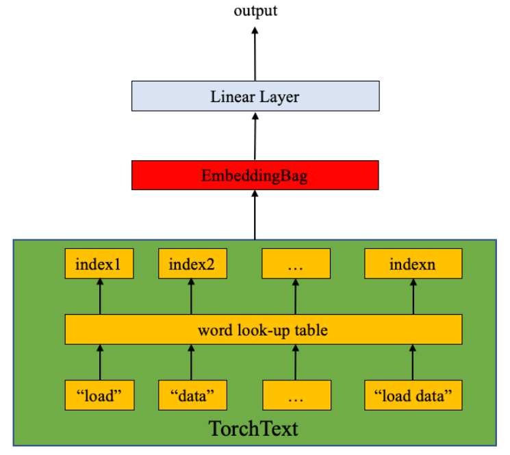

文本分类与TorchText
本教程将说明如何在torchtext中使用文本分类数据集，其中包括：
- AG_NEWS,
- SogouNews,
- DBpedia,
- YelpReviewPolarity,
- YelpReviewFull,
- YahooAnswers,
- AmazonReviewPolarity,
- AmazonReviewFull
下面的例子显示如何使用TextClassification中的数据集训练有监督的文本分类模型。
以ngrams的方式加载数据
使用ngrams可以捕捉句子中有关单词顺序的一些信息。实际上，应用二元语法或三元语法作为单词组可以比仅一个单词组成句子提供更多的好处。一个例子：
"load data with ngrams"
Bi-grams results: "load data", "data with", "with ngrams"
Tri-grams results: "load data with", "data with ngrams"
TextClassification数据集支持n元语法方法。如果NGRAMS 设置为2，数据集中的示例文本将是单个单词加上二元语法字符串的列表。
import torch
import torchtext
from torchtext.datasets import text_classification
NGRAMS = 2
import os
if not os.path.isdir('./.data'):
os.mkdir('./.data')
train_dataset, test_dataset = text_classification.DATASETS['AG_NEWS'](
root='./.data', ngrams=NGRAMS, vocab=None)
BATCH_SIZE = 16
device = torch.device("cuda" if torch.cuda.is_available() else "cpu")
定义模型
该模型是由 EmbeddingBag层和线性层（参见下图）组成的。
nn.EmbeddingBag计算“袋”中embeddings的平均值。此处的文本具有不同的长度。nn.EmbeddingBag不需要填充，因为文本长度会以偏移量保存。
此外，由于nn.EmbeddingBag会动态累积嵌入中的平均值，因此nn.EmbeddingBag可以提高性能和存储效率，以处理张量序列。

import torch.nn as nn
import torch.nn.functional as F
class TextSentiment(nn.Module):
def __init__(self, vocab_size, embed_dim, num_class):
super().__init__()
self.embedding = nn.EmbeddingBag(vocab_size, embed_dim, sparse=True)
self.fc = nn.Linear(embed_dim, num_class)
self.init_weights()
def init_weights(self):
initrange = 0.5
self.embedding.weight.data.uniform_(-initrange, initrange)
self.fc.weight.data.uniform_(-initrange, initrange)
self.fc.bias.data.zero_()
def forward(self, text, offsets):
embedded = self.embedding(text, offsets)
return self.fc(embedded)
初始化一个实例
AG_NEWS数据集有四个标签，也就是一共有四类。分别如下：
1 : World
2 : Sports
3 : Business
4 : Sci/Tec
VOCAB_SIZE等于词汇表的长度（包括单个单词和ngrams）。NUN_CLASS等于标签的数量，在AG_NEWS情况下为4。
VOCAB_SIZE = len(train_dataset.get_vocab())
EMBED_DIM = 32
NUN_CLASS = len(train_dataset.get_labels())
model = TextSentiment(VOCAB_SIZE, EMBED_DIM, NUN_CLASS).to(device)
生成批数据的方法
由于文本条目的长度不同，因此使用自定义函数generate_batch（）被用于生成批量数据和偏移量。该函数在torch.utils.data.DataLoader中传递给collate_fn在`。collate_fn的输入是batch_size大小的张量列表，collate_fn函数把它们打包成一个小规模的批处理（mini-batch）。请注意将collate_fn`在程序顶层声明。 这样可以确保该功能在每个程序中均可用。
原始数据批处理输入中的文本条目打包到一个列表中，并作为单个张量串联在一起，作为nn.EmbeddingBag的输入。 偏移量是分解符的张量，表示文本张量中各个序列的起始索引。 Label是一个保存单个文本条目的标签张量。
def generate_batch(batch):
label = torch.tensor([entry[0] for entry in batch])
text = [entry[1] for entry in batch]
offsets = [0] + [len(entry) for entry in text]
# torch.Tensor.cumsum returns the cumulative sum
# of elements in the dimension dim.
# torch.Tensor([1.0, 2.0, 3.0]).cumsum(dim=0)
offsets = torch.tensor(offsets[:-1]).cumsum(dim=0)
text = torch.cat(text)
return text, offsets, label
定义功能训练模型和评估结果。
建议PyTorch用户使用torch.utils.data.DataLoader，它使数据并行加载变得容易（此处有一个教程）。 我们在这里使用DataLoader加载AG_NEWS数据集并将其发送到模型以进行训练/验证。
from torch.utils.data import DataLoader
def train_func(sub_train_):
# Train the model
train_loss = 0
train_acc = 0
data = DataLoader(sub_train_, batch_size=BATCH_SIZE, shuffle=True,
collate_fn=generate_batch)
for i, (text, offsets, cls) in enumerate(data):
optimizer.zero_grad()
text, offsets, cls = text.to(device), offsets.to(device), cls.to(device)
output = model(text, offsets)
loss = criterion(output, cls)
train_loss += loss.item()
loss.backward()
optimizer.step()
train_acc += (output.argmax(1) == cls).sum().item()
# Adjust the learning rate
scheduler.step()
return train_loss / len(sub_train_), train_acc / len(sub_train_)
def test(data_):
loss = 0
acc = 0
data = DataLoader(data_, batch_size=BATCH_SIZE, collate_fn=generate_batch)
for text, offsets, cls in data:
text, offsets, cls = text.to(device), offsets.to(device), cls.to(device)
with torch.no_grad():
output = model(text, offsets)
loss = criterion(output, cls)
loss += loss.item()
acc += (output.argmax(1) == cls).sum().item()
return loss / len(data_), acc / len(data_)
拆分数据集和运行模型
由于原始AG_NEWS数据没有验证集，我们用的0.95（训练集）和0.05（验证集）的比例分割训练数据集。在这里，我们使用PyTorch核心库中的torch.utils.data.dataset.random_split函数。
CrossEntropyLoss将nn.LogSoftmax（）和nn.NLLLoss（）合并到一个类中。在训练多分类模型时很有用。 SGD将随机梯度下降方法用作优化程序。 初始学习率设置为4.0。 StepLR用于每轮调整学习率。
import time
from torch.utils.data.dataset import random_split
N_EPOCHS = 5
min_valid_loss = float('inf')
criterion = torch.nn.CrossEntropyLoss().to(device)
optimizer = torch.optim.SGD(model.parameters(), lr=4.0)
scheduler = torch.optim.lr_scheduler.StepLR(optimizer, 1, gamma=0.9)
train_len = int(len(train_dataset) * 0.95)
sub_train_, sub_valid_ = \
random_split(train_dataset, [train_len, len(train_dataset) - train_len])
for epoch in range(N_EPOCHS):
start_time = time.time()
train_loss, train_acc = train_func(sub_train_)
valid_loss, valid_acc = test(sub_valid_)
secs = int(time.time() - start_time)
mins = secs / 60
secs = secs % 60
print('Epoch: %d' %(epoch + 1), " | time in %d minutes, %d seconds" %(mins, secs))
print(f'\tLoss: {train_loss:.4f}(train)\t|\tAcc: {train_acc * 100:.1f}%(train)')
print(f'\tLoss: {valid_loss:.4f}(valid)\t|\tAcc: {valid_acc * 100:.1f}%(valid)')
输出：
Epoch: 1 | time in 0 minutes, 8 seconds
Loss: 0.0261(train) | Acc: 84.8%(train)
Loss: 0.0000(valid) | Acc: 90.4%(valid)
Epoch: 2 | time in 0 minutes, 8 seconds
Loss: 0.0120(train) | Acc: 93.5%(train)
Loss: 0.0000(valid) | Acc: 91.2%(valid)
Epoch: 3 | time in 0 minutes, 8 seconds
Loss: 0.0070(train) | Acc: 96.4%(train)
Loss: 0.0000(valid) | Acc: 90.8%(valid)
Epoch: 4 | time in 0 minutes, 8 seconds
Loss: 0.0039(train) | Acc: 98.1%(train)
Loss: 0.0001(valid) | Acc: 91.0%(valid)
Epoch: 5 | time in 0 minutes, 8 seconds
Loss: 0.0023(train) | Acc: 99.0%(train)
Loss: 0.0001(valid) | Acc: 90.9%(valid)
运行在GPU上的相关信息：
Epoch：1 |时间为0分钟，11秒
Loss: 0.0263(train) | Acc: 84.5%(train)
Loss: 0.0001(valid) | Acc: 89.0%(valid)
Epoch：2 |时间0分钟，10秒
Loss: 0.0119(train) | Acc: 93.6%(train)
Loss: 0.0000(valid) | Acc: 89.6%(valid)
Epoch：3 |时间0分钟，9秒
Loss: 0.0069(train) | Acc: 96.4%(train)
Loss: 0.0000(valid) | Acc: 90.5%(valid)
Epoch：4 |时间为0分钟，11秒
Loss: 0.0038(train) | Acc: 98.2%(train)
Loss: 0.0000(valid) | Acc: 90.4%(valid)
Epoch：5 |时间为0分钟，11秒
Loss: 0.0022(train) | Acc: 99.0%(train)
Loss: 0.0000(valid) | Acc: 91.0%(valid)
使用测试数据集评估模型
print('Checking the results of test dataset...')
test_loss, test_acc = test(test_dataset)
print(f'\tLoss: {test_loss:.4f}(test)\t|\tAcc: {test_acc * 100:.1f}%(test)')
Out:
Checking the results of test dataset...
Loss: 0.0002(test) | Acc: 89.3%(test)
检查测试数据集的结果...
Loss: 0.0237(test) | Acc: 90.5%(test)
在随机新闻上测试
使用到目前为止最好的模型并测试高尔夫新闻。标签信息在这里可用。 import re from torchtext.data.utils import ngrams_iterator from torchtext.data.utils import get_tokenizer
ag_news_label = {1 : "World",
2 : "Sports",
3 : "Business",
4 : "Sci/Tec"}
def predict(text, model, vocab, ngrams):
tokenizer = get_tokenizer("basic_english")
with torch.no_grad():
text = torch.tensor([vocab[token]
for token in ngrams_iterator(tokenizer(text), ngrams)])
output = model(text, torch.tensor([0]))
return output.argmax(1).item() + 1
ex_text_str = "MEMPHIS, Tenn. – Four days ago, Jon Rahm was \
enduring the season’s worst weather conditions on Sunday at The \
Open on his way to a closing 75 at Royal Portrush, which \
considering the wind and the rain was a respectable showing. \
Thursday’s first round at the WGC-FedEx St. Jude Invitational \
was another story. With temperatures in the mid-80s and hardly any \
wind, the Spaniard was 13 strokes better in a flawless round. \
Thanks to his best putting performance on the PGA Tour, Rahm \
finished with an 8-under 62 for a three-stroke lead, which \
was even more impressive considering he’d never played the \
front nine at TPC Southwind."
vocab = train_dataset.get_vocab()
model = model.to("cpu")
print("This is a %s news" %ag_news_label[predict(ex_text_str, model, vocab, 2)])
Out:
This is a Sports news
这是一个体育新闻
你可以在此处找到对应的代码示例。
脚本的总运行时间： （1分钟26.424秒）